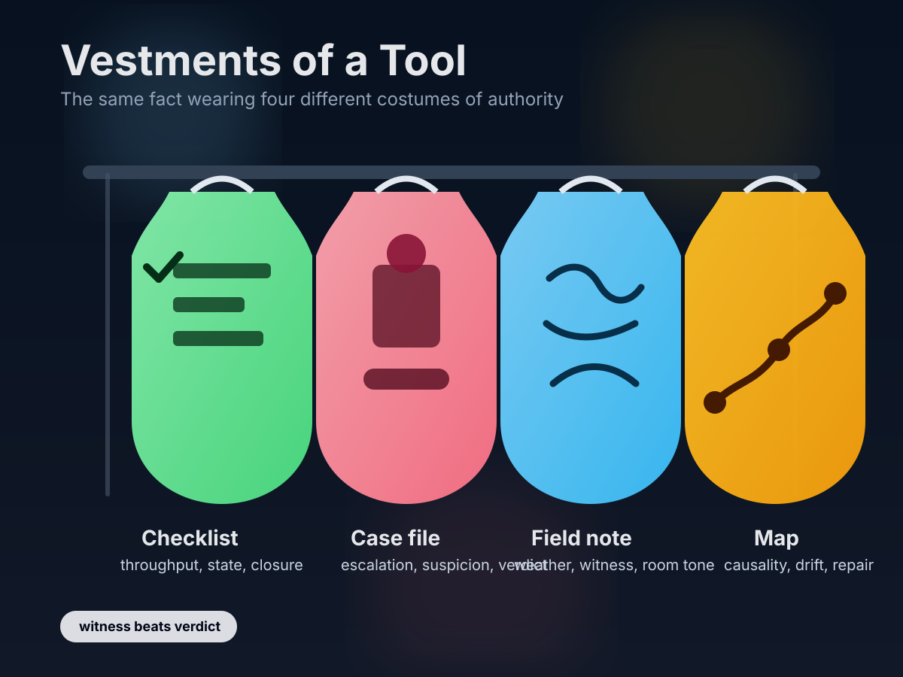

A tiny dressing room for artifacts
Vestments of a Tool
Start with one plain event: a person missed something, forgot something, drifted somewhere. Then dress that same event four ways. In one outfit it becomes a checkbox. In another, a verdict. In another, a field note. In another, a map. The data barely changes. The moral weather does.
Pick an incident
Pick the clothes
Rendered artifact

What changes
Checklist Good for throughput. Bad at context. It asks whether the box changed state.
Case file Good for escalation. Dangerous when it starts testifying about character instead of circumstance.
Field note Messier. More merciful. Records what was happening in the room.
Map The most useful outfit for repair. It shows where drift entered the system and where a different path could begin.